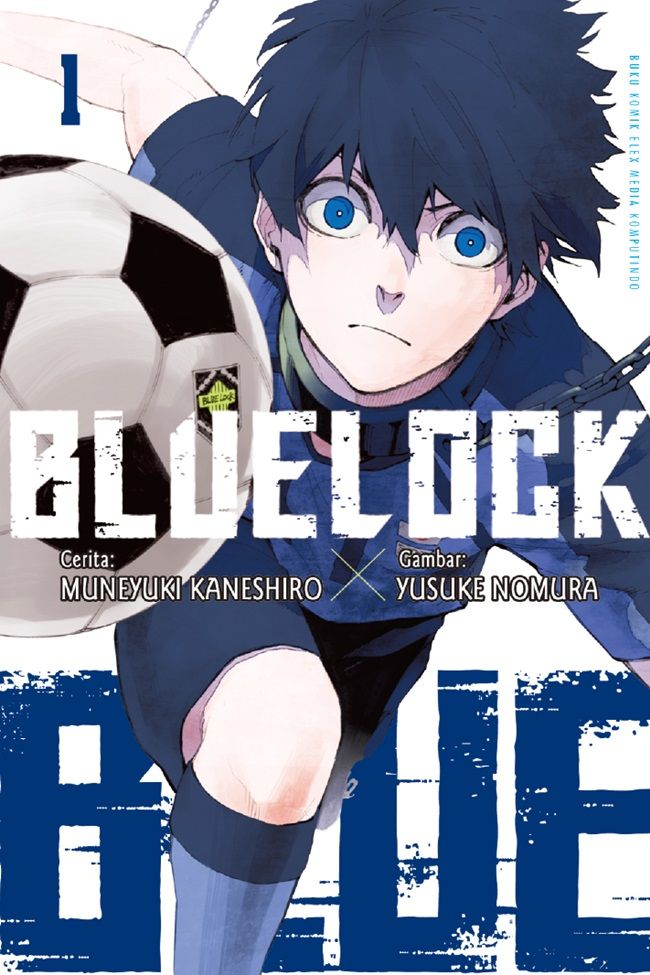
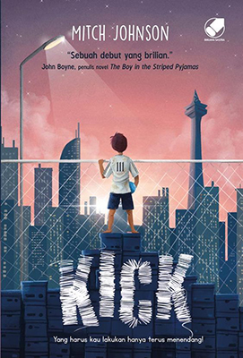

Daftar Produk Buku
Buku Cerita Anak Umur 3-5 tahun
Rp235.000
Buku ini dirancang khusus untuk anak usia 3–5 tahun, dengan cerita sederhana, kalimat pendek, dan ilustrasi berwarna cerah yang menarik perhatian. Isinya membantu anak mengenal huruf, angka, warna, serta nilai-nilai dasar seperti berbagi dan sopan santun dengan cara yang menyenangkan dan mudah dipahami.

Buku Cerita Anak Umur 1-3 tahun
Rp235.000
Buku ini dirancang untuk anak usia 1–3 tahun dengan halaman tebal, gambar besar, dan warna kontras yang mudah dikenali mata si kecil. Kata-katanya sangat sederhana, banyak pengulangan bunyi yang seru, sehingga membantu merangsang kemampuan bicara, mengenal benda sekitar, dan melatih motorik saat membuka setiap halaman.

Buku Cerita Anak umur 3-5 tahun
Rp99.000
Buku ini adalah petualangan kecil penuh warna untuk anak usia 3–5 tahun, di mana setiap halaman seperti pintu ajaib yang mengajak mereka mengenal huruf, angka, warna, dan emosi lewat cerita lucu serta gambar cerah. Dibuat dengan kalimat sederhana dan ritme yang menyenangkan, sehingga si kecil bisa belajar sambil tertawa dan berimajinasi.

Buku Cerita Anak umur 3-5 tahun
Rp399.000
Buku ini untuk anak usia 3–5 tahun yang suka bertanya dan berimajinasi. Setiap halamannya seperti dunia kecil penuh warna, dengan cerita ringan, tokoh lucu, dan kalimat berirama yang mudah diingat—membantu si kecil belajar huruf, angka, serta nilai kebaikan sambil merasa seperti sedang bermain dalam petualangan ajaib.

Buku Cerita Anak umur 2-6 tahun
Rp999.999
Buku ini dirancang untuk anak usia 1–3 tahun dengan halaman tebal, gambar besar, dan warna kontras yang mudah dikenali mata si kecil. Kata-katanya sangat sederhana, banyak pengulangan bunyi yang seru, sehingga membantu merangsang kemampuan bicara, mengenal benda sekitar, dan melatih motorik saat membuka setiap halaman.

Buku Cerita Anak umur 3-5 tahun
Rp999.000
Buku ini mengajak anak usia 3–5 tahun berlayar ke negeri awan permen, berbicara dengan hewan yang bisa bernyanyi, dan menemukan pintu rahasia di balik pelangi. Dengan ilustrasi penuh warna dan cerita yang mengalir seperti dongeng sebelum tidur, setiap halaman membangkitkan rasa ingin tahu, keberanian, dan imajinasi tanpa batas—seolah dunia kecil mereka berubah menjadi petualangan ajaib.

Buku Cerita Remaja umur 17-19 tahun
Rp23.000.000
“Buku ini ditujukan untuk remaja usia 17–19 tahun yang sedang mencari jati diri dan arah masa depan. Dengan cerita yang relevan tentang persahabatan, mimpi, cinta, dan tantangan hidup, buku ini menghadirkan kisah yang emosional, realistis, dan penuh makna—cocok untuk menemani masa peralihan menuju kedewasaan.

Buku Cerita Anak umur 10-12 tahun
Rp555.900
Blue Lock adalah manga sepak bola yang menceritakan program pelatihan ekstrem untuk menciptakan striker terbaik Jepang. Penuh persaingan ketat, strategi, dan ambisi besar, cerita ini menonjolkan ego, mental juara, serta perjuangan para pemain muda untuk menjadi yang terkuat di lapangan.

Buku Cerita Anak umur 10-12 tahun
Rp555.900
Buku ini ditujukan untuk anak usia 10–12 tahun yang menyukai sepak bola, dengan cerita penuh aksi di lapangan, persahabatan dalam tim, dan semangat pantang menyerah. Melalui pertandingan seru, latihan keras, dan mimpi menjadi pemain hebat, pembaca diajak belajar tentang kerja sama, disiplin, dan percaya diri sambil menikmati petualangan dunia bola.

Buku Cerita Lfc umur 10-30 tahun
Rp9.000.000
Liverpool F.C. adalah klub sepak bola asal Inggris yang bermarkas di Anfield dan dikenal sebagai salah satu tim paling sukses di Eropa. Dijuluki *The Reds*, Liverpool memiliki sejarah gemilang dengan banyak gelar liga dan trofi Liga Champions, serta terkenal dengan semangat comeback dan dukungan fanatik suporternya. ⚽
.jpg)
Buku Cerita Bola umur 15-30 tahun
Rp15.000.000
Cerita bola adalah kisah tentang perjuangan, kerja sama tim, dan mimpi menjadi pemain hebat. Biasanya menceritakan latihan keras, pertandingan menegangkan, persahabatan di lapangan, hingga momen gol penentu kemenangan. Lewat cerita sepak bola, pembaca diajak merasakan semangat pantang menyerah dan arti kebersamaan dalam meraih kemenangan. ⚽
.jpg)
Buku Cerita Comback umur 15-30 tahun
Rp18.000.000
Comeback Liverpool F.C. atas FC Barcelona di semifinal UEFA Champions League seperti kisah ajaib di Anfield—tertunduk 3-0 di leg pertama, lalu bangkit dengan kemenangan 4-0 yang mengguncang dunia dan membalikkan agregat menjadi 4-3.

Buku Cerita Sahabat umur 15-30 tahun
Rp19.000.000
Persahabatan Trent Alexander-Arnold dan Andrew Robertson di Liverpool F.C. adalah gambaran dua sahabat yang tumbuh bersama di sisi sayap. Saling percaya, saling mendukung, dan sama-sama berkontribusi lewat assist dan kerja keras, mereka bukan hanya duet bek modern, tetapi juga simbol kebersamaan dalam tim.
.jpg)